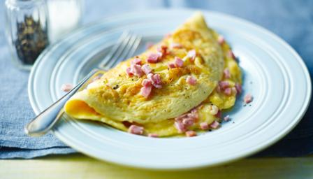

When I was a little boy I used to love scrambled eggs... I used to love bacon--or just meat in
general... I used to love cheese...
This I used to love cheese but now
Then, one day my parents took me to a restaurant called IHOP (International House Of Pancakes).
When I went, they had scrambled eggs, but on the menu I saw eggs... AND BACON...
AND CHEESE! Since my first omelette, I've never gone back to scrambled eggs
unless I had to. Eventually, I learned how to make my own. Now I can cook omelettes all day long.